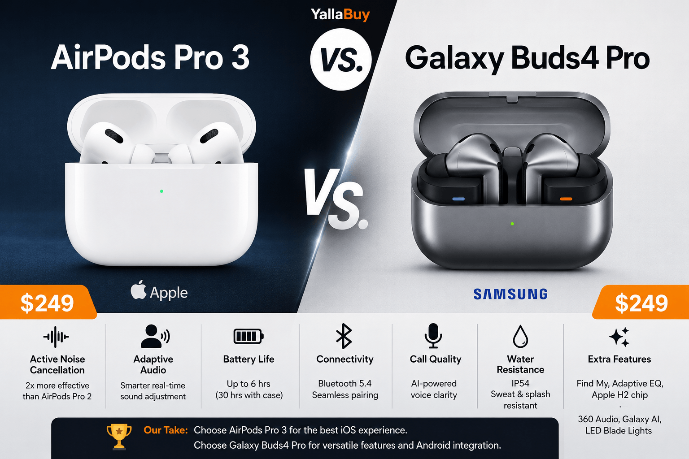
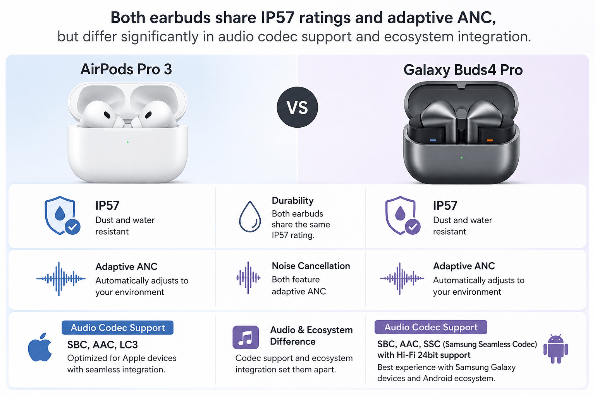

Both Apple and Samsung currently sell their flagship true wireless earbuds for the same $249.99 MSRP, and on paper they look like mirror images of each other. This guide breaks down what independent testing actually found.

Independent lab testing from SoundGuys measured roughly 8 hours and 42 minutes of battery life with ANC on, and separate lab measurements found noise cancellation reducing outside sound by an average of 90% — currently the strongest ANC result SoundGuys has recorded for in-ear headphones. The catch: a documented, unresolved static/hiss issue affecting a portion of units.
Check Price on AmazonSoundGuys measured ANC attenuation around 84% across the audible spectrum, strong for the category but behind the AirPods Pro 3, and battery life landed at 6 hours and 1 minute with ANC on. In exchange, Galaxy phone owners unlock 24-bit/96kHz Samsung Seamless Codec audio, deeper Galaxy AI integration, and Auracast support.
Check Price on AmazonBoth products launched at the same MSRP: $249.99. The AirPods Pro 3 launched in September 2025 and has since been discounted repeatedly, with reported Amazon prices ranging from around $169 during a Prime Day promotion to $199 during other sale periods. The Galaxy Buds4 Pro launched in February 2026 alongside the Galaxy S26 series, with discounted Amazon/Woot pricing reported as low as $164.99.
| Spec | AirPods Pro 3 | Galaxy Buds4 Pro |
|---|---|---|
| MSRP | $249.99 | $249.99 |
| Release date | September 2025 | March 2026 |
| Chip | H2 (Apple) | Not officially disclosed |
| Water/dust resistance | IP57 | IP57 |
| ANC battery (official) | Up to 8 hours | Up to 6 hours |
| ANC battery (independent test) | 8h 42m (SoundGuys) | 6h 1m (SoundGuys) |
| Total battery with case (official) | 24 hours | 26 hours |
| Charging port | USB-C, MagSafe/wireless | USB-C (no wireless) |
| ANC attenuation (independent) | ~90% avg (SoundGuys) | ~84% avg (SoundGuys) |
| Health features | Built-in heart rate sensor | None disclosed |
| Hi-Res audio codec | No (AAC only) | Yes, SSC 24-bit/96kHz (Samsung only) |
| EQ | None | 9-band EQ |
| Multipoint | Yes | Not supported |
| Broadcast audio | No | Auracast |
| Best ecosystem fit | iPhone/Apple devices | Samsung Galaxy devices |
Sources: Apple's official technical specifications page, Samsung's official product page, SoundGuys' standardized lab testing.
The AirPods Pro 3's headline differentiator is Apple's own claim of the "world's best in-ear Active Noise Cancellation," removing up to 2x more noise than the AirPods Pro 2 and 4x more than the original AirPods Pro — a manufacturer claim that independent SoundGuys testing has broadly corroborated, measuring roughly 90% attenuation. Apple also added a first-for-AirPods heart-rate sensor built for workout tracking, and Live Translation baked into the ANC system.
The Galaxy Buds4 Pro differentiates itself less through noise cancellation and more through audio hardware: a wider woofer combined with an enhanced Adaptive EQ, plus support for Hi-Res audio and a full manual EQ — features Apple doesn't offer on any AirPods model. Samsung is also betting on AI-driven conveniences like head gestures and a hands-free AI assistant layer for Galaxy phone owners.

What it is: Both earbuds use microphones and real-time processing to cancel ambient sound.
How it works: Apple's system uses the H2 chip to process noise 200+ times per second (per longstanding Apple documentation) and Samsung markets its version as "ANC 2.0," which the company says intelligently adapts in real time — a manufacturer claim.
Why it matters: For commuters, frequent flyers, or open-office workers, ANC strength is often the single biggest factor in daily satisfaction.
Limitations: Independent testing shows a real gap here. SoundGuys measured the AirPods Pro 3 at roughly 90% average noise attenuation versus roughly 84% for the Galaxy Buds4 Pro. Both numbers are strong for the category, but the AirPods Pro 3 currently leads. On the Apple side, that lead comes with an asterisk: a portion of owners report a distracting static or hissing sound specifically when ANC is engaged with no audio playing.
What it is: How long each earbud lasts per charge and across a full day with the case.
How it works: Runtime depends on driver efficiency, battery capacity (61mAh per earbud plus a 530mAh case battery for the Galaxy Buds4 Pro), and how much processing (ANC, AI features) is running simultaneously.
Why it matters: This is one of the most searched and most practically important specs for earbuds, especially for long commutes, workdays, or travel.
Limitations: This is the widest, most consistently confirmed gap in the entire comparison. Apple's own claim of 8 hours held up and was even exceeded in SoundGuys' test (8h42m). Samsung's own claim of 6 hours also held up closely in testing (6h01m per SoundGuys, and separately corroborated by GSMArena's testing). Both companies' official numbers proved accurate — but Apple's number is simply higher.
One counterpoint: the AirPods Pro 3's case total actually dropped from the previous generation. What Hi-Fi's review noted the total rated runtime fell from 30 hours (AirPods Pro 2) to 24 hours on the AirPods Pro 3, which the reviewer called "a bit of a backwards step." CNN Underscored's reviewer reported a similar real-world observation, noting they fully drained the charging case after about two days of heavy on-and-off use.
What it is: The driver hardware and audio codecs each earbud uses to reproduce sound.
How it works: The Galaxy Buds4 Pro uses a dedicated amplifier per driver in a two-way (tweeter/woofer) configuration, supporting Samsung's own Seamless Codec (SSC) at up to 24-bit/96kHz — but that Hi-Res tier is gated to Samsung's own devices. The AirPods Pro 3 relies on Apple's tuning of a single custom driver and does not offer a Hi-Res codec or manual EQ.
Limitations: One independent reviewer who tested the Galaxy Buds4 Pro across both an iPhone and a Samsung phone reported hearing only a modest 5–10% improvement using Samsung's UHQ codec versus regular AAC on a non-Samsung device — meaning the headline Hi-Res spec is largely a Samsung-exclusive benefit. Neither earbud has yet received a full RTINGS objective frequency-response measurement publicly summarized at the time of this article's research.
What it is: How securely and comfortably each earbud sits in the ear.
How it works: Apple redesigned the AirPods Pro 3 internals using what the company describes as more than 10,000 ear scans and 100,000 hours of testing — a manufacturer claim, not an independently verified figure. Samsung similarly says its Buds4 series relied on "over 10,000 simulations" and over 1 million ear data points, also a manufacturer claim.
Limitations: Real-world results diverge sharply from the marketing here. Multiple independent reviewers and Samsung's own community forum describe recurring fit complaints for the Galaxy Buds4 Pro. One Samsung Community post described a user unable to pass Samsung's fit test with any of the included tip sizes, calling the fit change a regression from the Buds2 Pro's isolation performance. TechRadar's full review separately concluded the Buds4 Pro carries over an "insecure fit" and a fiddly, proprietary ear-tip locking system that was already a known complaint on the Buds3 Pro. By contrast, professional reviews of the AirPods Pro 3's fit have been largely positive, with What Hi-Fi and CNN Underscored both praising the improved seal.
What it is: Apple's new heart-rate sensor versus Samsung's Galaxy AI integration.
How it works: Apple's sensor is "intended for use during workouts with the Fitness app and compatible third-party apps," tracking over 50 workout types, per Apple's own documentation. Samsung's Buds4 Pro includes Head Gesture controls to manage calls and engage with Bixby hands-free, per Samsung's press materials.
Limitations: Apple's heart-rate feature requires an iPhone running iOS 26 or later with a compatible Fitness app; it is not a substitute for a dedicated fitness tracker or medical device. Samsung's head-gesture feature was independently tested and found to work reliably for basic yes/no interactions but was described by one reviewer as "a little basic at launch".
The most reliable, source-attributed figures gathered from independent testing organizations:
| Metric | AirPods Pro 3 (SoundGuys) | Galaxy Buds4 Pro (SoundGuys) |
|---|---|---|
| ANC battery life | 8h 42m | 6h 1m |
| Average noise attenuation | ~90% | ~84% |
Both figures come from SoundGuys' standardized battery test using real music peaking at 75dB and its standardized ANC attenuation measurement, and both were independently cross-checked in a head-to-head SoundGuys comparison article. GSMArena's separate lab test of the Galaxy Buds4 Pro reached a similar battery conclusion, finding the earbuds matched Samsung's 6-hour claim.
Because YallaBuy has not personally tested either product, this section summarizes what independent reviewers and verified testers reported firsthand.
CNN Underscored's reviewer, testing the AirPods Pro 3 against a personal AirPods Pro 2 as a baseline, wrote that battery life on the earbuds was a clear upgrade but flagged draining the case fully after roughly two days of heavy use — a smaller total buffer than the outgoing model.
TechRadar's reviewer, who spent a week with the Galaxy Buds4 Pro, reported enjoying the sound and touch controls but had to swap ear tips because the initial fit didn't feel solid, and noted the buds fell out specifically during running, concluding they were fine for everyday use but not ideal for workouts.
Starting shortly after the September 2025 launch, a significant number of owners began reporting a static, hissing, or "seashell-like" sound audible specifically when Active Noise Cancellation is engaged and no audio is playing — with some users also reporting it bleeding into music and video playback. According to TechRadar's coverage, which cites MacRumors' reporting, Apple released two firmware updates (in November and December 2025) that did not resolve the complaints, and as of the most recent reporting available, the issue remained unaddressed.
An informal poll embedded in one article found roughly 51% of respondents reporting they'd experienced the static, versus about 22% reporting no problem — useful as a rough indicator of how widespread the complaints are among engaged readers, but not a scientifically representative sample of all AirPods Pro 3 owners. This should be treated as a recurring, well-documented complaint, not an isolated report, and it's worth checking for more recent firmware update notes before buying if this concerns you.
As detailed in the Fit section above, multiple independent sources — a professional TechRadar review, a Samsung Community support thread, and hands-on testing notes — describe a recurring problem with secure fit and with the proprietary, hard-to-swap ear tips. This appears to be a carryover issue from the Galaxy Buds3 Pro generation rather than something new, based on TechRadar's explicit note that "recurring Galaxy Buds issues rear their heads again".
SoundGuys' review lists both as drawbacks relative to competitors at the same price, including the AirPods Pro 3, which supports both.
Neither earbud delivers its full feature set outside its home ecosystem. The AirPods Pro 3's spatial audio, hearing-aid features, and deepest Siri integration require an iPhone. The Galaxy Buds4 Pro's Hi-Res SSC codec, 9-band EQ depth, and Galaxy AI assistant features require a Samsung Galaxy phone.
If neither of these fits your needs, independent reviewers frequently point to a few other options worth knowing about:
SoundGuys' head-to-head comparison with the Galaxy Buds4 Pro found readers split 66%/34% in favor of the Galaxy Buds4 Pro, but the Bose model is worth considering if excellent ANC and cross-platform multipoint matter more to you than ecosystem AI features.
REBUILT FOR COMFORT — AirPods 4 have been redesigned for exceptional all-day comfort and greater stability. With a refined contour, shorter stem, and quick-press controls for music or calls.
CNN Underscored noted these were still a relevant budget alternative, sometimes selling for $199 or less, for iPhone owners who don't need the Pro 3's ANC or battery upgrade.
| Category | Winner | Why |
|---|---|---|
| ANC strength | AirPods Pro 3 | ~90% vs ~84% attenuation in SoundGuys testing |
| Battery life (earbuds) | AirPods Pro 3 | 8h42m vs 6h01m in SoundGuys testing |
| Audio customization | Galaxy Buds4 Pro | 9-band EQ and Hi-Res codec (Samsung devices only) |
| Cross-device flexibility | AirPods Pro 3 | Supports multipoint; Buds4 Pro does not |
| Charging convenience | AirPods Pro 3 | Wireless charging supported; Buds4 Pro case does not |
| Fit reliability | AirPods Pro 3 | Buds4 Pro has multiple documented fit complaints |
| Known reliability issue | Galaxy Buds4 Pro | AirPods Pro 3 has an unresolved, widely reported static/hiss bug |
| Health tracking | AirPods Pro 3 | Built-in heart-rate sensor is a new, unique feature |
| Broadcast audio | Galaxy Buds4 Pro | Supports Auracast; AirPods do not |
At full MSRP, both earbuds cost the same $249.99, which makes the decision purely about ecosystem fit and feature priorities rather than price. Once discounts enter the picture, the calculation shifts slightly: both have been observed selling in a similar $165–$210 range at different points in 2026, so neither has a consistent price advantage over the other — timing your purchase around a sale event (Prime Day, Black Friday, back-to-school promotions) is likely to matter more than brand choice for your wallet.
The more important value question is whether you'll actually use the ecosystem-exclusive features. If you own an iPhone, the AirPods Pro 3's ANC and battery advantages are fully accessible to you. If you own a Galaxy S26-series phone, the Buds4 Pro's Hi-Res audio and Galaxy AI features are fully accessible to you. But if you're an Android user without a Samsung phone, or an iPhone user who doesn't care about ANC or battery life, a cheaper third option (like the Technics EAH-AZ100 or AirPods Pro 2) may deliver better value than either flagship discussed here.
Based on the available independent testing, the AirPods Pro 3 currently has the edge in the metrics that matter most broadly — active noise cancellation strength and battery life — and SoundGuys' own head-to-head comparison reached the same conclusion. However, that edge comes with a real, unresolved caveat: a static/hiss issue that a substantial share of vocal owners have reported and that Apple had not fixed as of the most recent available reporting. If that risk doesn't bother you (or you're comfortable using Apple's replacement program if it occurs), and you're an iPhone owner, the AirPods Pro 3 is the stronger overall pick for most buyers.
The Galaxy Buds4 Pro makes the most sense specifically for Samsung Galaxy S26-series owners who want Hi-Res audio, a manual EQ, and deep Galaxy AI integration, and who are willing to accept a shorter battery life and a fit that multiple independent sources describe as less secure than the competition. It is a worse choice for anyone without a Samsung phone, since its most distinctive features are locked away from other devices.
Apple Newsroom
— AirPods Pro 3 announcement
Apple official technical specifications
(apple.com/airpods-pro/specs, support.apple.com)Samsung Mobile Press
— Galaxy Buds4 series announcementSamsung official product specifications
(samsung.com)SoundGuys
— AirPods Pro 3 review, Galaxy Buds4 Pro review, and multiple head-to-head comparisonsGSMArena
— Galaxy Buds4 Pro reviewTechRadar
— Galaxy Buds4 Pro review and hands-on coverage; AirPods Pro 3 static issue coverageWhat Hi-Fi
— AirPods Pro 3 reviewCNN Underscored
— AirPods Pro 3 review and pricing coverageAndroid Central
— Galaxy Buds4 Pro hands-on reviewSamsung Community forum threads
— user-reported fit issuesMacRumors / Reddit community reports
— on AirPods Pro 3 static issue, as reported by TechRadar and PhoneArenaCamelcamelcamel, Swappa, DealNews, 9to5Toys, AppleInsider, PhoneArena
— pricing history (all snapshots; verify current price before purchase)